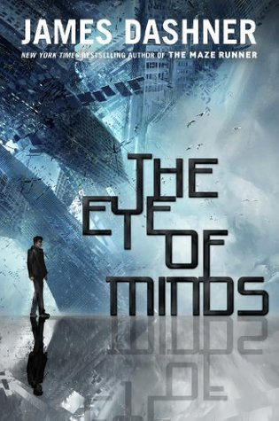

"The Eye of Minds"
- Read on 2013-10-21
- Rating: ️️️️️
- Format: 📖 (308 pages)
This came on a recommendation from Brandon Sanderson, and honestly I could have skipped it. Maybe it's a genre that isn't really for me. I kept thinking of "Ready Player One" as I read this.
The book takes place in a dystopian America, where once again society is hooked to a virtual world. Michael, the main character, strives to solve a mystery, and become an ultimate gamer.
- Prior: Steve Jobs
- Next: Steelheart